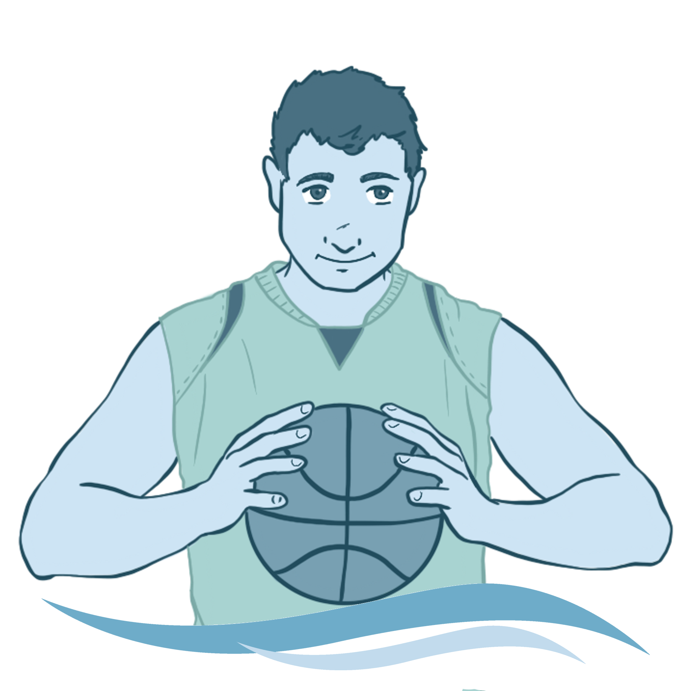
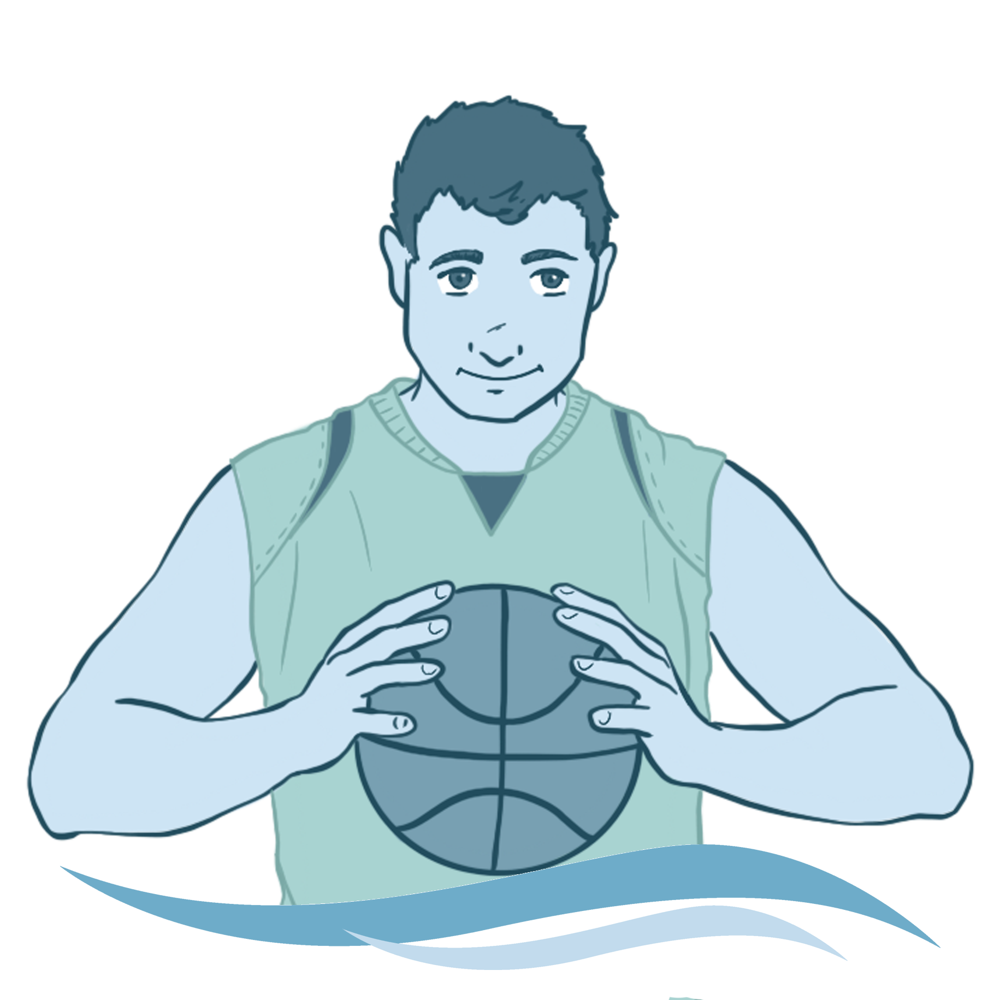
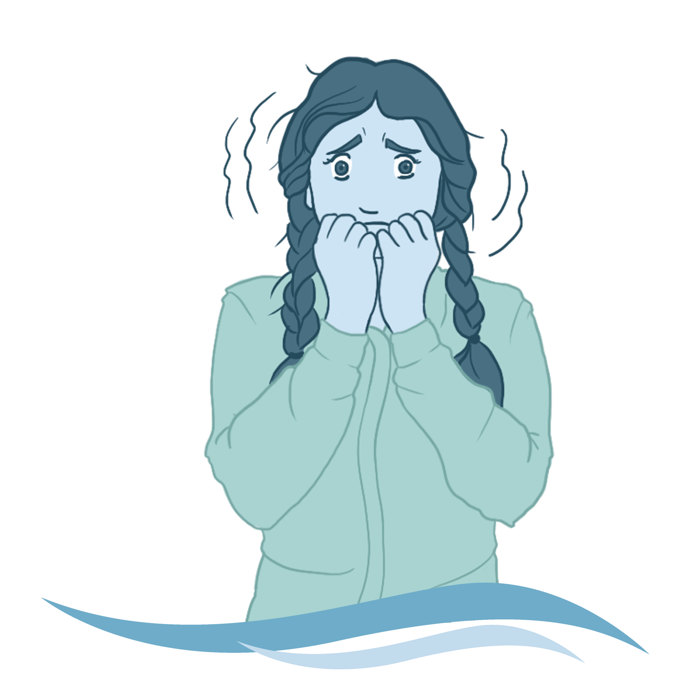
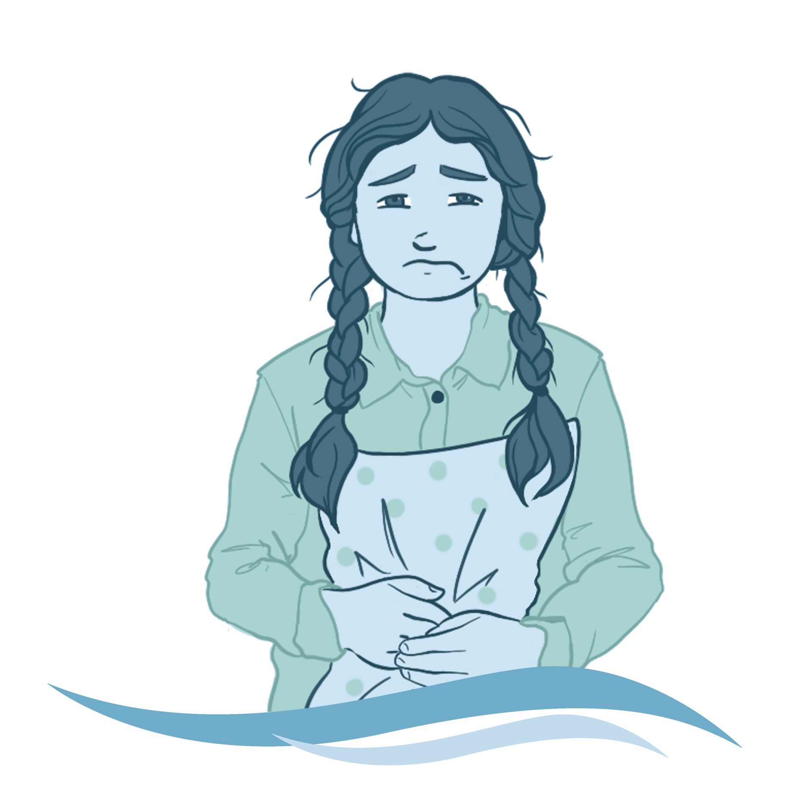
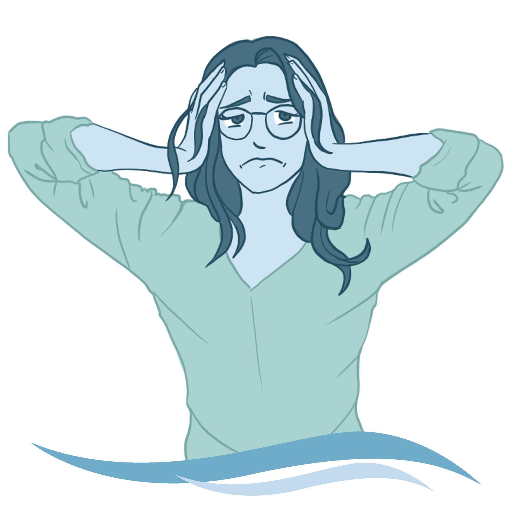

Az ILF Neurofeedback tréning egy egyénre szabott, alacsony frekvenciájú tréning, amely tudat alatt harmonizálja, optimalizálja az idegrendszer működését.

 

Ide fog jönni a frappáns mondat a stresszről.

Ide fog jönni a frappáns mondat, vagy inkább mondatok a szorongásról.
Ide fog jönni a frappáns mondat, vagy inkább mondatok a csúcsteljesítményről.

Ide fog jönni a frappáns mondat, vagy inkább mondatok az alvászavarokról.

Ide fog jönni a frappáns mondat, vagy inkább mondatok a fejfájásról.